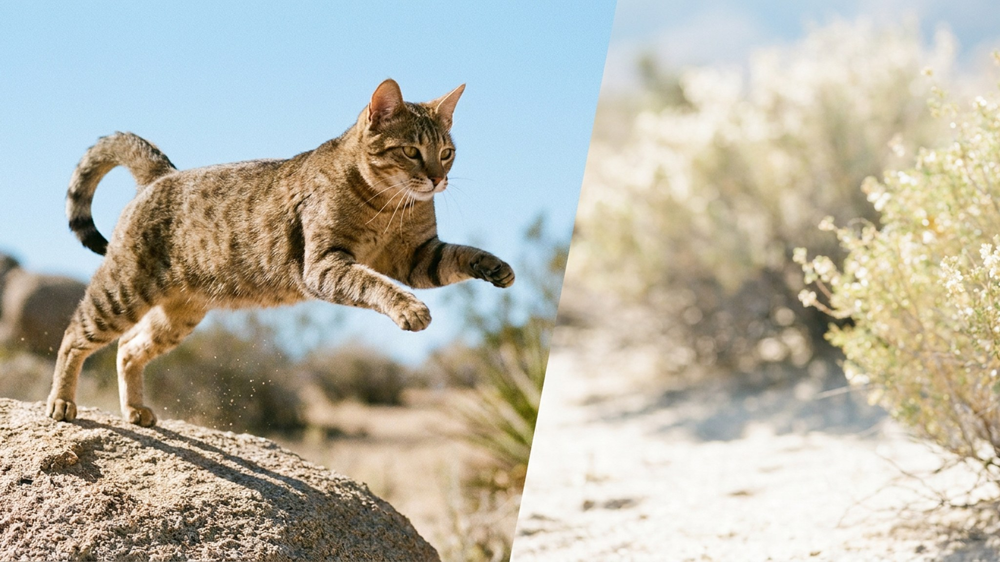

Тысячи лет эта кошка выживала на раскалённых улицах Аравийского полуострова — без хозяев, мисок и тёплой батареи. Естественный отбор оставил крепкое здоровье, острый ум и характер, который в тесной квартире быстро скучает и начинает «чудить». Если вы присматриваетесь к аравийской мау, вот что стоит знать до того, как она поселится у вас.
🐾 У вас аравийская мау?
AnimaLife соберёт уход под породу: к каким болезням есть склонность, что проверять по возрасту, чем кормить и когда пора к врачу. Бесплатно, прямо в мессенджере.
Собрать план ухода → Собрать в MAX →
У вас iPhone? AnimaLife есть в App Store
Аравийская мау — не выведенная в питомнике «дизайнерская» кошка, а аборигенная порода: её предки веками жили сами по себе в пустынях ОАЭ, Омана, Катара. Признание фелинологов она получила недавно, но сам тип формировался естественно.
Отсюда её главные черты: сухое мускулистое тело, длинные ноги, большие уши (помогают отводить тепло) и очень короткая шерсть почти без подшёрстка. Это кошка, «спроектированная» жарой и необходимостью самой добывать еду — крепкая, выносливая и сообразительная.
Аравийская мау активна, любопытна и территориальна. Она любит наблюдать за домом с высоты, патрулировать комнаты и участвовать во всём, что происходит. К своим людям привязывается крепко, но навязчивой нежности вроде «спать на руках часами» от неё обычно не ждут.
С шерстью всё просто — короткий однослойный мех почти не сваливается. Достаточно вычёсывать раз в неделю, в сезон линьки чуть чаще. А вот с энергией сложнее: главная забота владельца — не расчёска, а насыщенный день.
Аравийская мау — отличный вариант для тех, кто хочет здоровую, неприхотливую в уходе и «живую» кошку-компаньона, готовую играть и общаться. Она хорошо уживается с детьми и другими животными, если растёт с ними с детства.
А вот тем, кто мечтает о спокойном пушистом «меховом одеяле», которое весь день дремлет, эта порода не подойдёт: заскучавшая мау найдёт себе занятие сама — и оно вам вряд ли понравится. Это кошка для активного дома, а не для тишины.
🐾 Ваш питомец — аравийская мау?
Заведите профиль в AnimaLife: приложение запомнит породу, возраст и вес и будет подсказывать по уходу именно для неё. Вопросы AI-ветеринару — круглосуточно и бесплатно.
Завести профиль → Завести в MAX →
У вас iPhone? AnimaLife есть в App Store
🐾 Понравился разбор?
Подпишитесь на канал — каждый день разбираем по одному тревожному симптому у кошек и собак: что в пределах нормы, а когда пора к врачу. Подпишитесь, чтобы не пропустить разбор, который может спасти здоровье вашего питомца.
Материал носит информационный характер и не заменяет очную консультацию ветеринара.